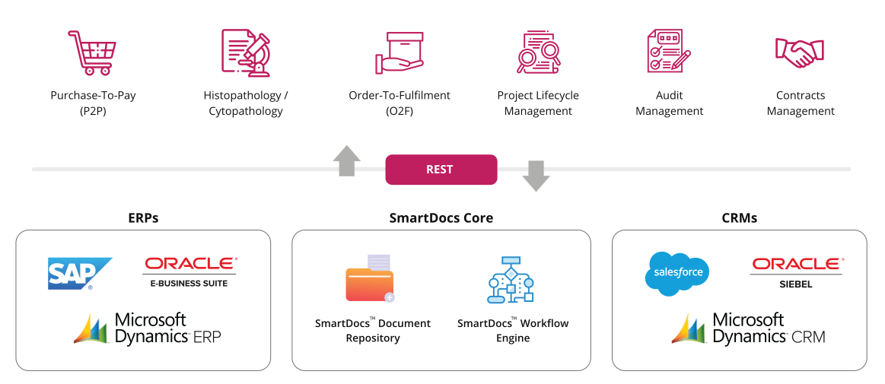
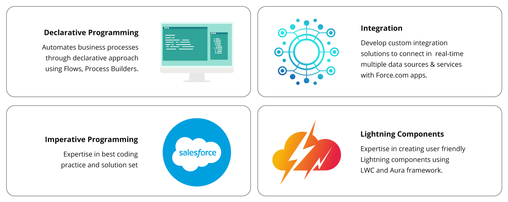
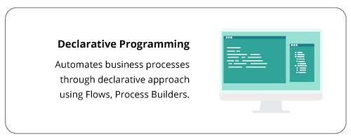
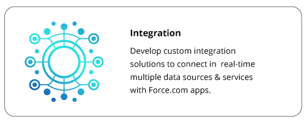
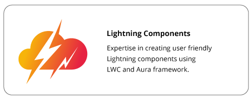

Services
Digital Transformation
デジタルトランスフォーメーションとは、最新のデジタルテクノロジーを駆使して業務プロセスを見直し、職務遂行能力とその行動特性を検証して、組織の文化的、機構的、運営上の慣習と将来における変化の全てを、各階層レベルと機能にわたって段階的にスマートな統合を行うことを言います。デジタルトランスフォーメーションはさまざまな利害関係者（可能な限り広い意味での顧客）に新たな価値を生み出し、行動特性を革新し変化する状況に迅速に適応する職務遂行能力を獲得するためにテクノロジーを活用します。
したがって、デジタルトランスフォーメーションは、変化を刷新の機会ととらえたビジネスおよび組織の活動と業務プロセス、職務遂行能力、ビジネスモデルの根本的な変革です。
ここ数年著しい発展を遂げた技術にクラウドコンピューティングやビッグデータ、高精度データ分析、人工知能があります。また、高度情報通信技術(ICT)の発達によって、スマートフォンを駆使した移動型ワークプレースや、ネットワークにつながれ電動化された自動運転車によってもたらされる全く新しいモビリティスタイルは、IoTと統合されて人々の生活に大きな進化をもたらします。最近注目される技術的要素として考慮すべきポイントは：
したがって、デジタルトランスフォーメーションは、変化を刷新の機会ととらえたビジネスおよび組織の活動と業務プロセス、職務遂行能力、ビジネスモデルの根本的な変革です。
ここ数年著しい発展を遂げた技術にクラウドコンピューティングやビッグデータ、高精度データ分析、人工知能があります。また、高度情報通信技術(ICT)の発達によって、スマートフォンを駆使した移動型ワークプレースや、ネットワークにつながれ電動化された自動運転車によってもたらされる全く新しいモビリティスタイルは、IoTと統合されて人々の生活に大きな進化をもたらします。最近注目される技術的要素として考慮すべきポイントは：
- デジタルトランスフォーメーションを実現しうる要因の定義。
- 製造業におけるデジタルトランスフォーメーションには消費者の行動に影響を与えたり、業界全体を再構成しうる要素が求められる。
- 革新と改革の促進手段としてのテクノロジーは、全体論の中でデジタルトランスフォーメーションを構成する一部として定義される。
ファーストQA システムズは、ServiceNow、Salesforce、SmartDocsのエンタープライズクラウドプラットフォームを、デジタルトランスフォーメーションの取り組みを推進および実装するための基盤として活用します。
デジタルトランスフォーメーションに取り組み成熟した段階にある企業は、より機敏で、人材志向で、革新的で、顧客中心的で、合理化され、効率的であり、そして現状を変え、新しいサービス主導の収益を得るための機会へと導くことができます。
デジタルトランスフォーメーションに取り組み成熟した段階にある企業は、より機敏で、人材志向で、革新的で、顧客中心的で、合理化され、効率的であり、そして現状を変え、新しいサービス主導の収益を得るための機会へと導くことができます。
ファーストQAのServiceNow Center of Excellence (CoE)はServiceNowプラットフォームを基盤としたIT変革サービスのワンストップショップです。ServiceNowのサービスパートナーとして、当社のCoEは、豊かな専門知識と実績のある方法論をお客様のサービス・ポートフォリオにもたらします。
実証されたSIM（ServiceNow Implementation Methodology）を活用することにより、ServiceNow CoEメンバーは、ソリューションの設計や実装の先導、カスタマイゼーション、開発、そして首尾よく組織を変革していくための実装後のアプリケーションマネージメントサービスを提供するためにベストプラクティスやその領域の専門知識を活用しています。
実証されたSIM（ServiceNow Implementation Methodology）を活用することにより、ServiceNow CoEメンバーは、ソリューションの設計や実装の先導、カスタマイゼーション、開発、そして首尾よく組織を変革していくための実装後のアプリケーションマネージメントサービスを提供するためにベストプラクティスやその領域の専門知識を活用しています。
ServiceNow CoEがグローバル企業へご提供するサービス一覧:

実装サービス
アプリケーションマネージメントサービス
Now platform －ローコードおよびプロコード開発
Agility
App development
Workflow & Integration
Intelligence
App development
Workflow & Integration
Experience
App development
Workflow & Integration
実装サービス－効果的にビジネスの成果をもたらすソリューションのデザインは、ServiceNowへの投資、業界の知識、技術力、サービスマネジメントにおける機能横断的な経験からの
より大きなビジネスの価値を顧客にもたらすことを支援します。当社の専門的知識は、– ITSM, ITOM、ITBM、CSM、SecOps、HRSD、GRC やNOW platform 開発など、ServiceNowソ
リューションのいたるところに及びます。
アプリケーションマネージメントサービス（AMS）－ 実装後のビジネスニーズの変更を支援します。マネージドサービスベースでサービス品質とスケジュールの評価基準を定めたSLAを締結後、 固定価格でアップグレードを含めた継続的な改善とメンテナンスサービスを提供いたします。
NOW platform － ServiceNowプラットフォームでは、クラウドネイティブによるデジタルワークフローと豊富な機能が揃うプレビルドサービス、すなわちジャバスクリプトベースのオープンソースフレームワークAngularJSやBootstrapなどのプロコードと共に、 ほとんどプログラムコーデイングを必要としないローコード機能を活用してカスタムアプリケーションの構築を支援いたします。
アプリケーションマネージメントサービス（AMS）－ 実装後のビジネスニーズの変更を支援します。マネージドサービスベースでサービス品質とスケジュールの評価基準を定めたSLAを締結後、 固定価格でアップグレードを含めた継続的な改善とメンテナンスサービスを提供いたします。
NOW platform － ServiceNowプラットフォームでは、クラウドネイティブによるデジタルワークフローと豊富な機能が揃うプレビルドサービス、すなわちジャバスクリプトベースのオープンソースフレームワークAngularJSやBootstrapなどのプロコードと共に、 ほとんどプログラムコーデイングを必要としないローコード機能を活用してカスタムアプリケーションの構築を支援いたします。

今日のデジタルテクノロジーによる破壊的イノベーションの時代、グローバル企業では、複雑で変化が早く、絶え間なく進化し続けるビジネスの環境に遅れずについてい
く必要があります。このようなデジタル時代で成功するには、思考を変革し、迅速に行動に移すことが出来る適切なプラットフォームの機能に大きく左右されます。
SmartDocsは、私たちが推奨する「デジタルトランスフォーメーションの具現化」を可能にするリーディングソリューションです。企業コンテンツの効率的な管理のための豊富な機能を有し、業務プロセスとワークフローの自動化までも可能になります。 加えて、ワークフロー、監査、法令遵守、そして社内外の利害関係者との調整などで使うコンテンツマネジメント機能を標準装備しております。強固な256ビット AES暗号化方式、マルチ言語対応、PCやモバイルでの簡単操作、SaaS対応、加えてオンプレミスとクラウドプラットフォームでのハイブリット稼働環境をサポートいたします。
SmartDocsはワークフローベースの業務アプリケーションを短納期で開発・配備するための強力なワークフローエンジンを持っています。このアプリケーションフレームワークの能力を最大限に生かし、 ワークフロー、バックエンドのコンテンツレポジトリーレイヤを活用することで、ローコード機能を用いて使いやすいセキュアで拡張性のある企業アプリケーションを構築できます。
当社のSmartDocs実装チームは、高度な専門性と実証された方法論を用いて信頼性に基づいた顧客との共同作業により、業務プロセスの自動化と、 ローコードモデルによって構築されるワークフロー体系を顧客ポートフォリオへ反映いたします。
SmartDocsは、私たちが推奨する「デジタルトランスフォーメーションの具現化」を可能にするリーディングソリューションです。企業コンテンツの効率的な管理のための豊富な機能を有し、業務プロセスとワークフローの自動化までも可能になります。 加えて、ワークフロー、監査、法令遵守、そして社内外の利害関係者との調整などで使うコンテンツマネジメント機能を標準装備しております。強固な256ビット AES暗号化方式、マルチ言語対応、PCやモバイルでの簡単操作、SaaS対応、加えてオンプレミスとクラウドプラットフォームでのハイブリット稼働環境をサポートいたします。
SmartDocsはワークフローベースの業務アプリケーションを短納期で開発・配備するための強力なワークフローエンジンを持っています。このアプリケーションフレームワークの能力を最大限に生かし、 ワークフロー、バックエンドのコンテンツレポジトリーレイヤを活用することで、ローコード機能を用いて使いやすいセキュアで拡張性のある企業アプリケーションを構築できます。
当社のSmartDocs実装チームは、高度な専門性と実証された方法論を用いて信頼性に基づいた顧客との共同作業により、業務プロセスの自動化と、 ローコードモデルによって構築されるワークフロー体系を顧客ポートフォリオへ反映いたします。
Key Security Features

Content Encryption

Device Encryption
Secure Achitecture

IP Whitelisting

Permissions
Detailed logs
In today’s age of digital disruptions, global companies need to constantly embrace change to keep pace with the complex, volatile and ever-evolving business landscape. Success in the digital age depends on transformative thinking and having the right set of platforms to quickly convert these thoughts to action.
SmartDocs is our leading solution to “enable digital transformation” in your organization. It extends a plethora of features to organizations for efficient management of enterprise content as well as automate business processes and workflows.
It helps companies with content management using workflows, audit and compliance, internal and external stakeholder collaboration. It provides powerful 256-bit AES encryption, multi-language support, multi-device accessibility for users and supports SaaS, on-premises as well as hybrid installations.
SmartDocs has a powerful workflow engine for rapid development and deployment of workflow-based enterprise applications. Leverage the power of SmartDocs Application Framework and the Workflow and Content Repository layers in the backend, to build easy-to-use, secure and scalable enterprise applications using the low-code features of the platform.
Our SmartDocs implementation team brings rich expertise and proven methodologies to our client portfolio with B2B secured collaboration, process automation and workflows with low-code model.
SmartDocs is our leading solution to “enable digital transformation” in your organization. It extends a plethora of features to organizations for efficient management of enterprise content as well as automate business processes and workflows.
It helps companies with content management using workflows, audit and compliance, internal and external stakeholder collaboration. It provides powerful 256-bit AES encryption, multi-language support, multi-device accessibility for users and supports SaaS, on-premises as well as hybrid installations.
SmartDocs has a powerful workflow engine for rapid development and deployment of workflow-based enterprise applications. Leverage the power of SmartDocs Application Framework and the Workflow and Content Repository layers in the backend, to build easy-to-use, secure and scalable enterprise applications using the low-code features of the platform.
Our SmartDocs implementation team brings rich expertise and proven methodologies to our client portfolio with B2B secured collaboration, process automation and workflows with low-code model.
Build Enterprise Applications on SmartDocs
Rapid Development of Custom Applications through SmartDocs™ Application Framework


ファーストQAシステムズはSalesforceの設計、実装、カスタマイズおよびアプリケーションマネージメントサービスを提供しています。営業支援や顧客管理、
デジタルマーケティングおよびサービス管理それぞれの構成要素を統合することで、
多様なデジタルトランスフォーメーションへの取組みが可能となります。
Salesforceソリューションを導入することで、シームレスに連携した営業支援や顧客管理、デジタルマーケティング、ポータル、さらに業務アプリとデータ分析など様々なチャネルを通じて顧客とつながります。
Salesforceソリューションを導入することで、シームレスに連携した営業支援や顧客管理、デジタルマーケティング、ポータル、さらに業務アプリとデータ分析など様々なチャネルを通じて顧客とつながります。
- Salesforceセールスクラウドは、多くの営業案件の迅速処理、生産性の向上、確かなデータに裏付けされた見込み収益管理など営業業務に必須の情報を場所を問わずどこからでも提供いたします。
- Salesforceサービスクラウドは、顧客サービスの強化の為、コールセンターソフトウェアからセルフサービスポータルいたるまで直感的で素早い反応が可能な上、顧客ニーズを予期した柔軟な対応が可能となります。
- Salesforceマーケティングクラウドは、メールやモバイル機器、ソーシャルネットワークや広告、ウェブなどのクロスチャネルを通じて、個客ごとにあつらえた格別のユーザー体験を提供いたします。
- Salesforce Lightningはローコードやプロコードプラットフォーム上で、業務プロセスと外部アプリケーションの統合を自動化し、応答性の高い魅力あるユーザーインターフェースを顧客体験に基づいて提供いたします。
ファーストQAシステムズのSalesforceチームでは、デジタル化による業務改革ソリューションの提供を促進する為、Salesforce クラウドプラットフォーム上のソリューションフレームワークアクセラレータを活用します。
The Salesforce Ecosystem
Our Salesforce expertise helps our customers in planning, designing, and implementing Salesforce based business solutions.



